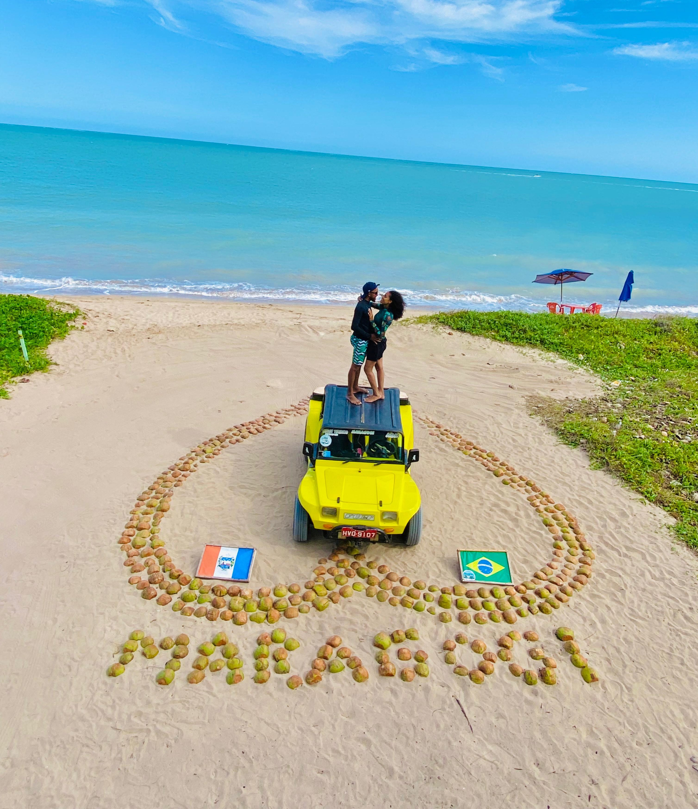
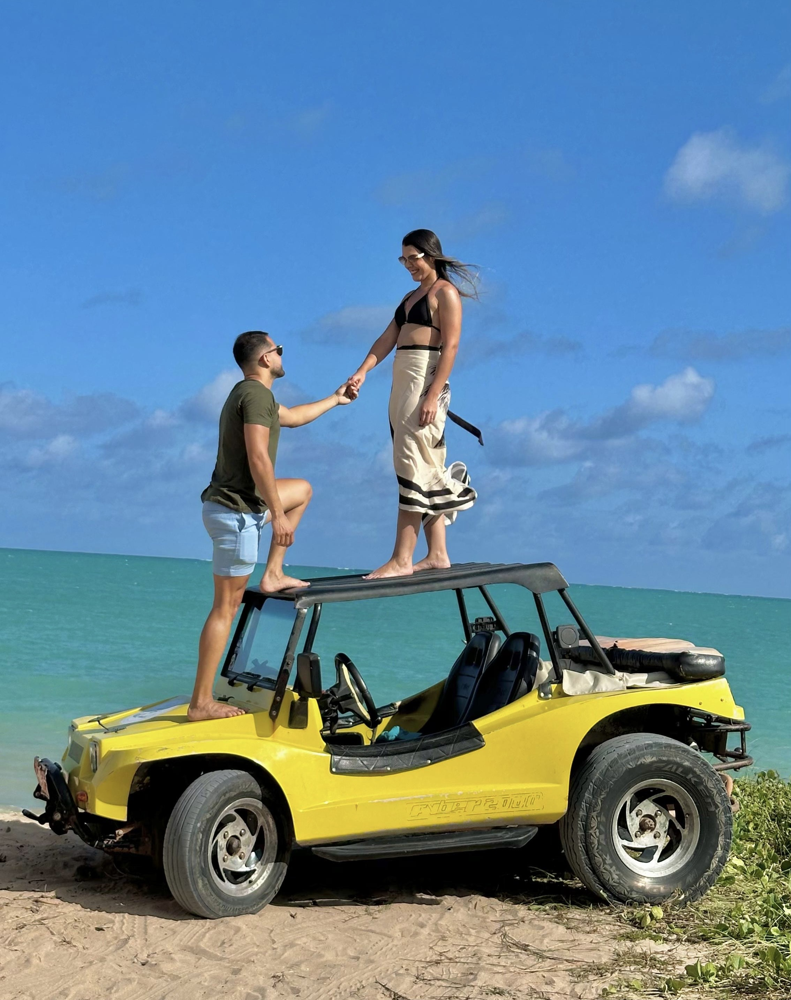
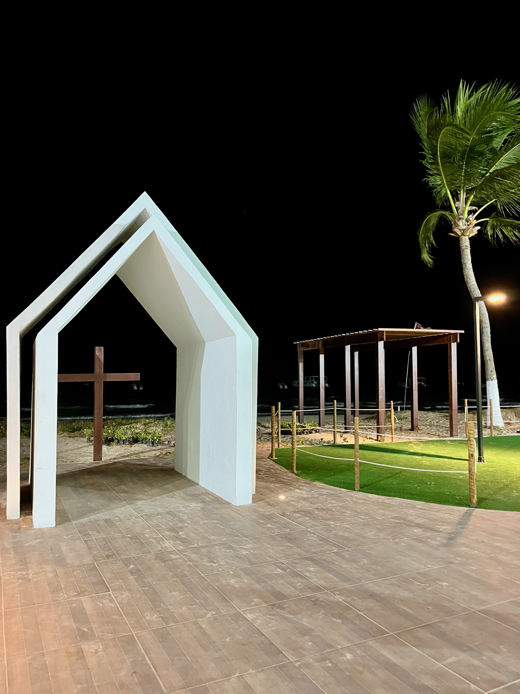
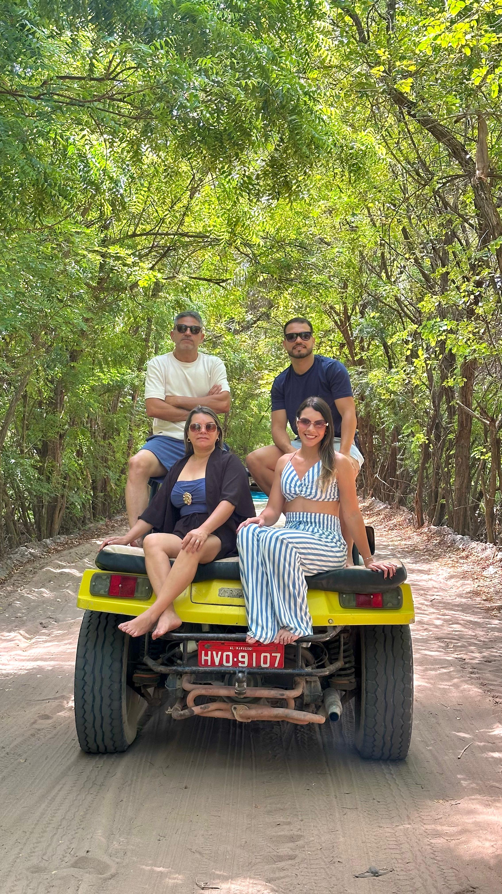
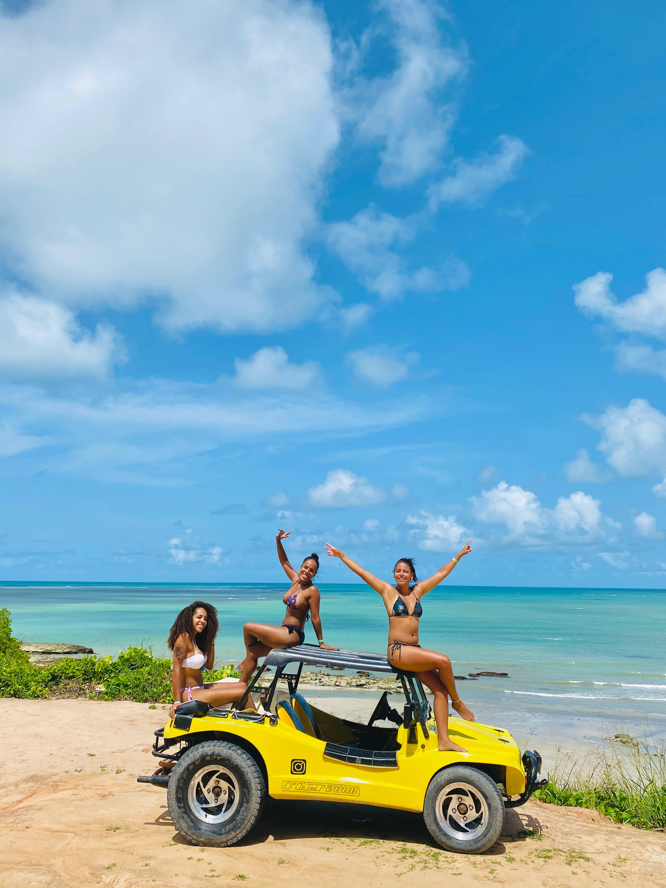
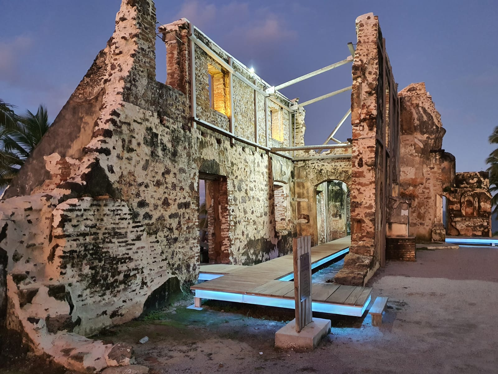
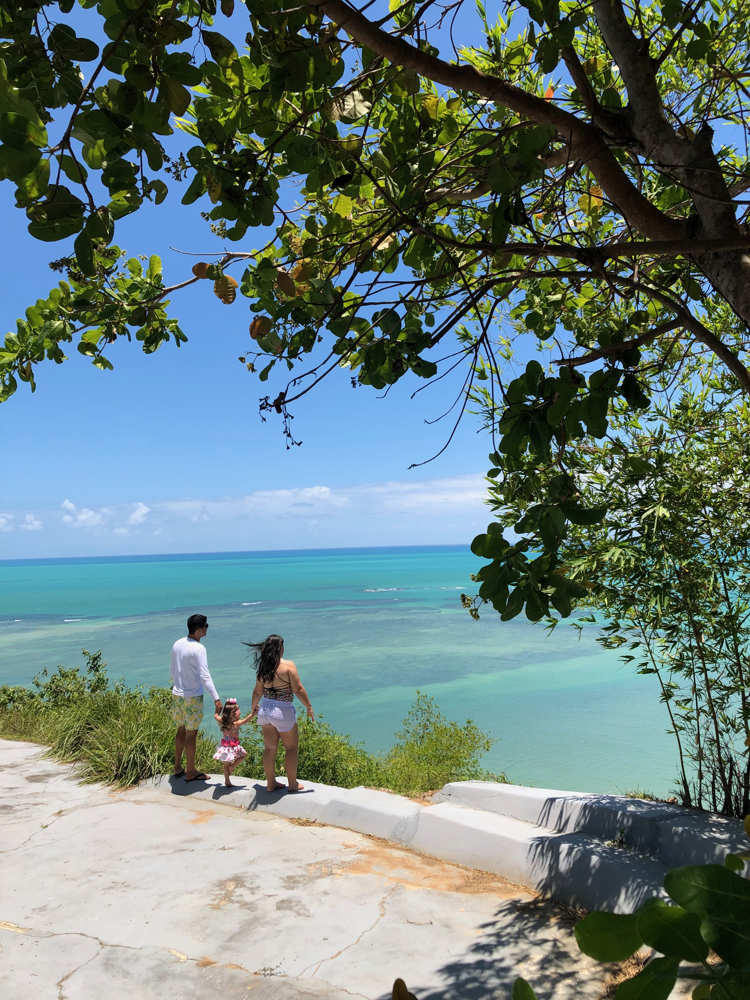
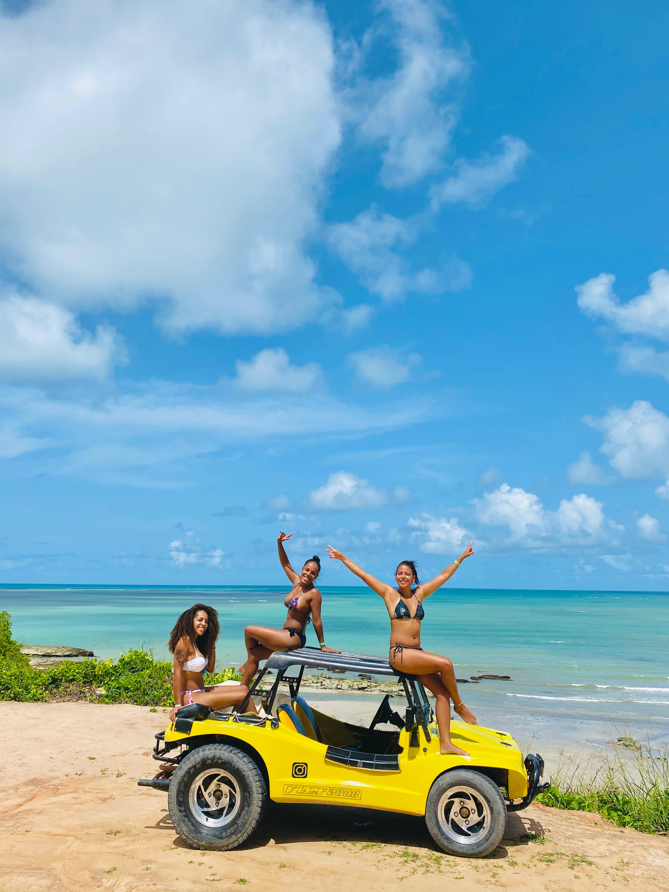
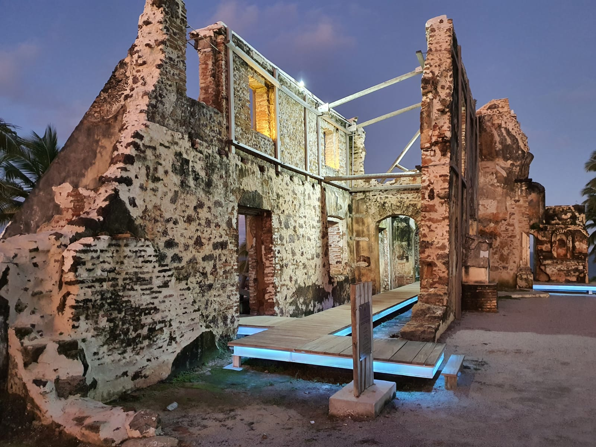
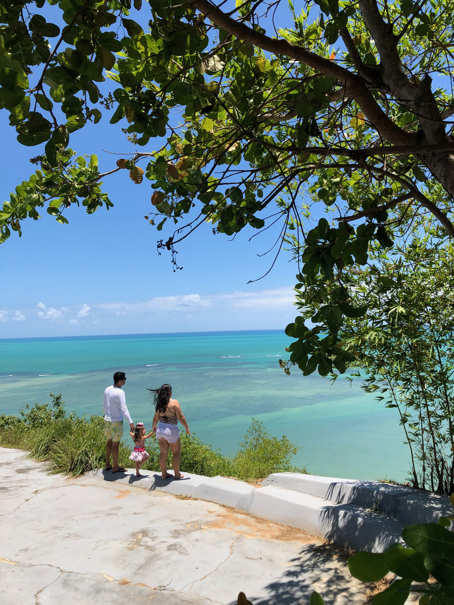

Litoral Norte
- • Orla da Cidade (Praia do Centro)
- • Sítio dos Cavalos (Área Verde)
- • Praia de Burgalhau
- • Praia de Barra Grande
- • Praia de Antunes
- • Praia de Xaréu / Bruna
- • Mirante de Maragogi
Valor: R$300,00 — Duração: 3h
Valor: R$480,00 — Duração: 5h
 




